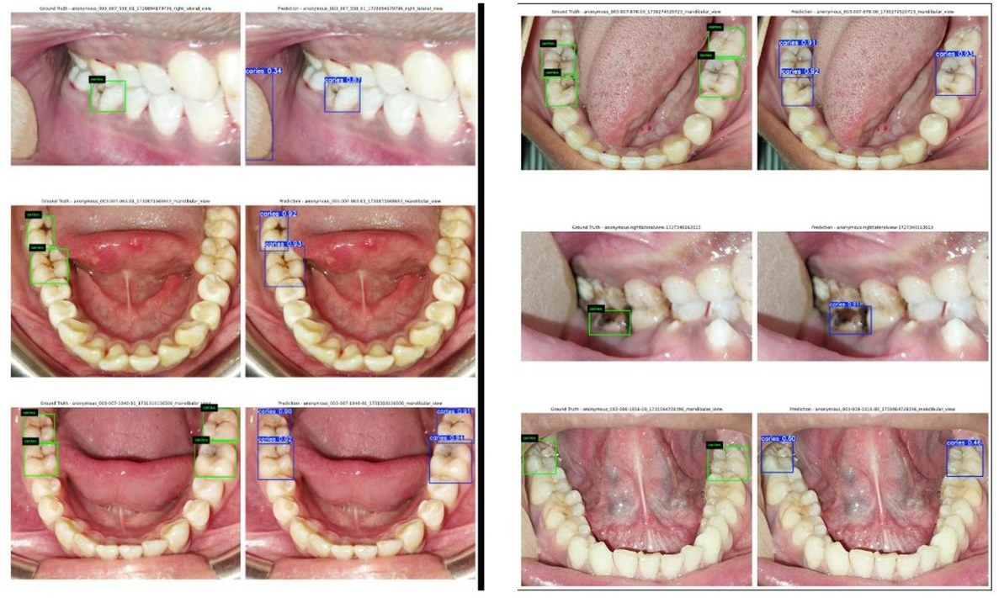

My first model already sees decay.
YOLO26m · 3,352 caries photographs · 9,143 lesions · 100 epochs · 2.01 hours on one NVIDIA L4 GPU
84.9%
recall on 336 held-out photos, above my 80% target
81.2%
precision
85.4%
mAP@50
83.0%
F1 score
How training went

A, B · Loss
Training and validation losses fell together: my model learned without memorizing.
C · Accuracy
Accuracy plateaued near epoch 60; I kept the best checkpoint, epoch 66.
D · Recall
Recall rose past my 80% screening target and stayed there.
What my model sees

Left, green
Clinician annotations of caries.
Right, blue
My model’s predictions, each with its confidence score.
What it shows
On photos it never trained on, my model boxes the lesions the clinician marked.